低速板分析：
20220416计算4M板中，每个点的时间：
4M/S 单通。
板子为14bit? , 因此一个点要2Bytes,所以一个通道为：8M/S
使用了2通道，因此2个通道数据量为：16M/S
得到的数据文件为1M/1个
因此每个文件占的时间为 1/16 s
每个文件的样点数:262142
因此两个样点时差：(1/16)/262142 s = 0.23842us
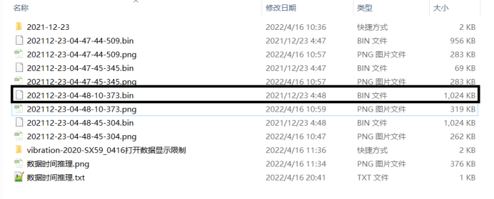
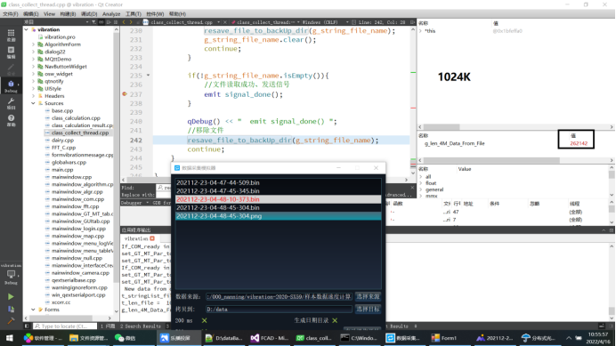
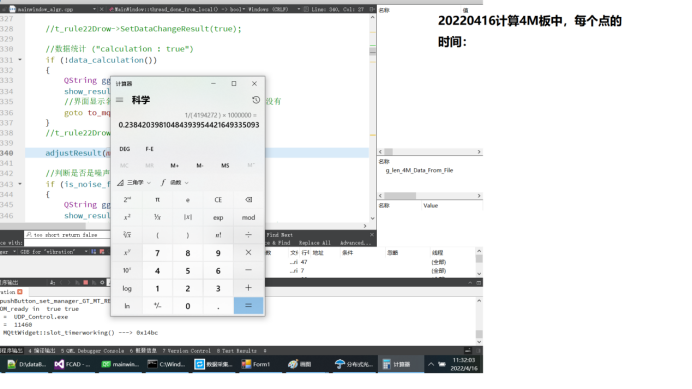
以下都为9825高速板：
采集程序：
我们用PD1接采集卡的CH1；PD2接采集卡的CH2；
打开FCAD.exe, 插上与采集卡连接的USB线后，会自动带出配置。
通道数：选择2通道；
分频因子：默认0，要改为1，重要！不改会产生数据溢出。
点击“启动”，开始采集。
采集完成后点击“停止”
采集到的数据在D:\data
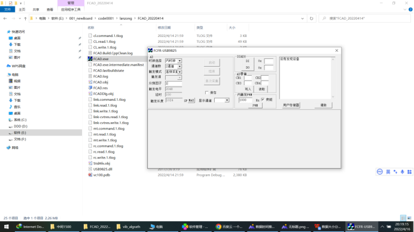
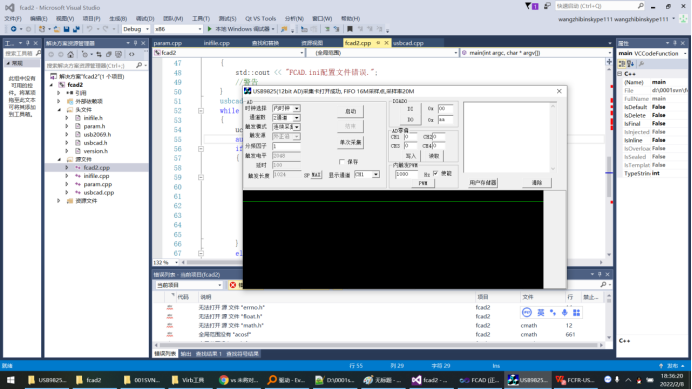
2000K一个的文件，每秒20个：
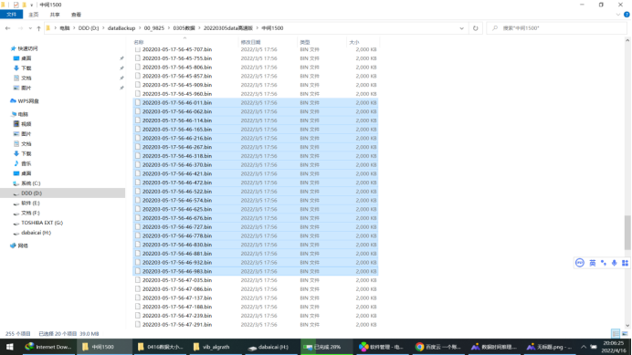
2000K一个的文件，每秒19个：
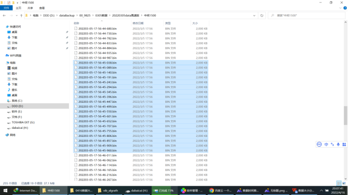
也就是说，每秒收到20个2000K一个的文件， 即：40M/S
我们配置的速度是10M/s,也就是一个通道10M/s；14bit,则每个采样点2Bytes,所以一个通道20M/s;
两个通道40M/s。
每个文件2000K ===> 每个文件占：2/40 s ===> 1/20 s
高速板样点个数：511999
高速板两个样点之间的时间间隔：
(1/20)/511999 s= 0.09765644 us
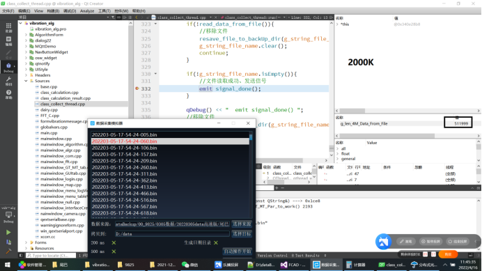
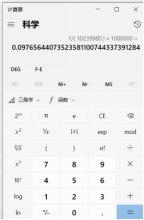
获取了9825高速板数据之后，要进行数据供应，此时运行如下软件：
feedData.bat
选择数据文件所在目录，此时软件界面可以看到全部的数据：
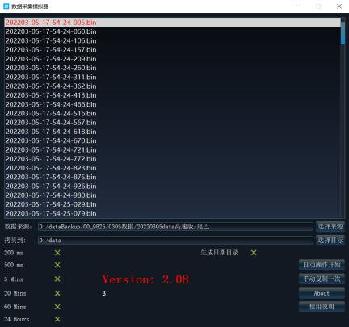
启动波形查看软件：
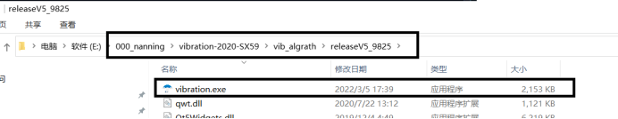
点击feedData.bat 中的“手动复制一次”，此时波形查看软件中就会有波形显示：
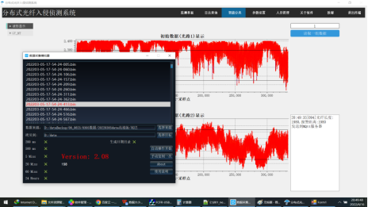
波形查看软件中可以设置需要显示的数据起始位置，显示长度：
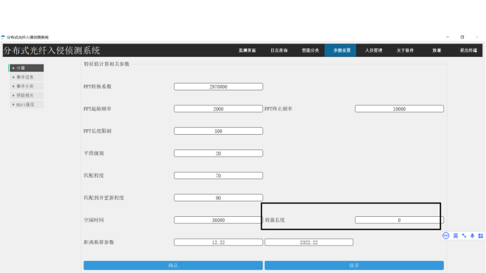
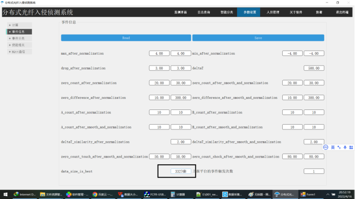
9825电压和幅度值关系（实际电压表测量）：
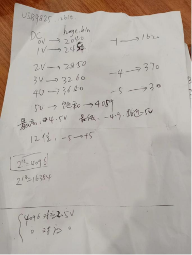
9825流程：
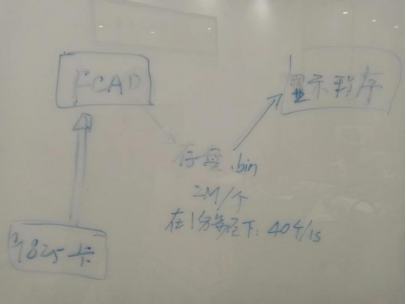